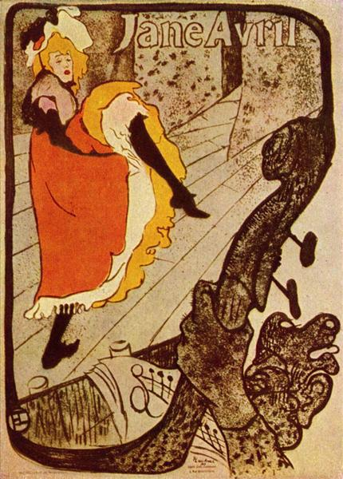
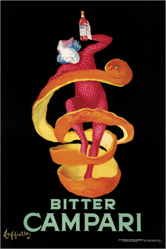
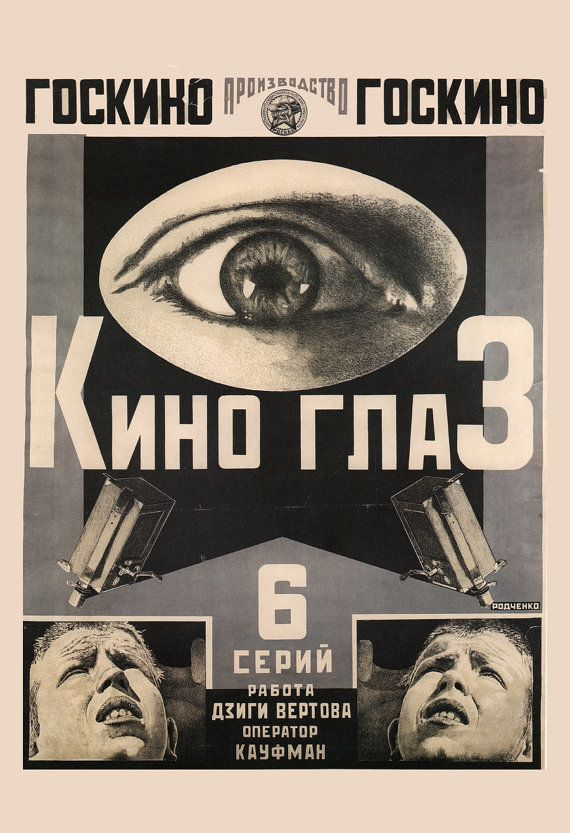
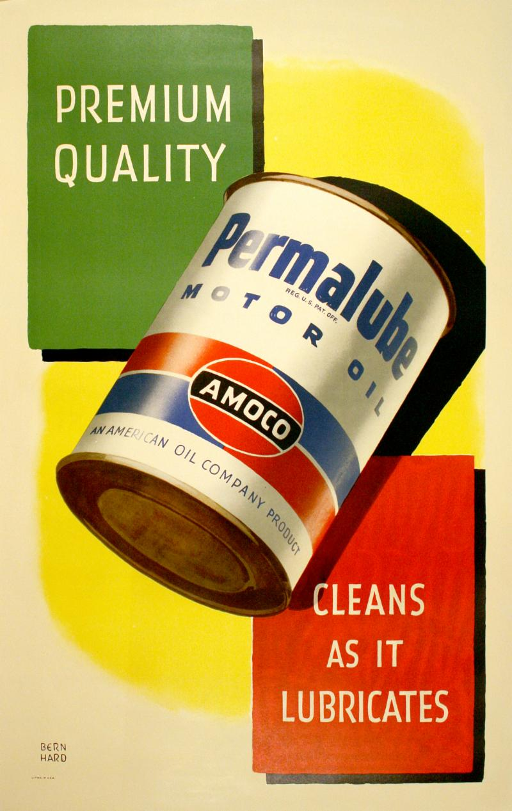
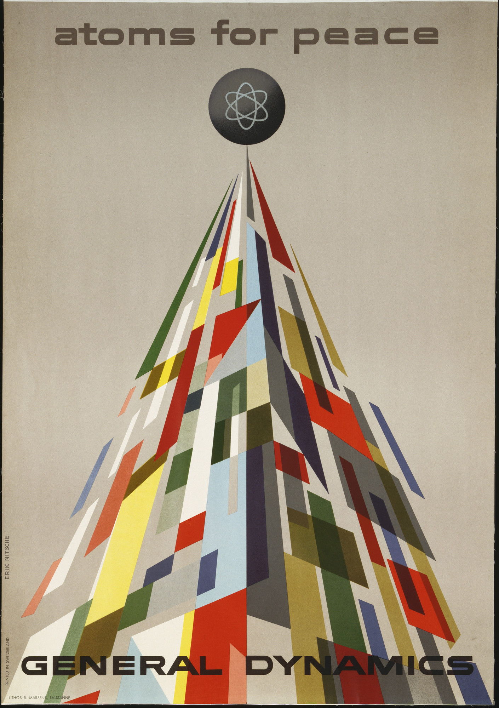
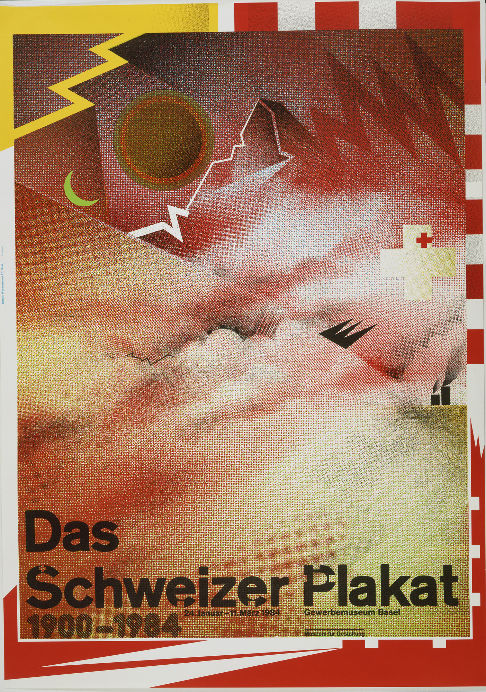

The very first chapter covers the beginning and first developments
of that day poster - the invention of Lithography, Chromolithography,
3 Stone technique and the reliability of the poster design.
Furthermore, the chapter pays homage to “father of the
fine art poster” - Jules Cheret.
Click to further continue the story

The Belle Epoque & Art Nouveau
The emergence of Art Nouveau and Belle Epoque eras changes the
face of Paris, and the city becomes somewhat of a public gallery
to the audiences. Henri de Toulouse-Lautrec and Alphonse Mucha's
works are the prime geniuses of the eras, which allows for the
poster design to flourish...
Click to further continue the story

The New Century & Early Modernism
The transformation from Art Nouveau's organic approach to
a simpler and more functional style begging in 1905 in such
countries like Austria, Germany and Scotland. Way before the
shift, the father of modern advertising Leonetto Cappiello
introduces this functionality, followed by Lucian Bernhard
and Ludwig Hohlwein… Click to further continue the story

Between World Wars - Art Deco, Modernism & Revolution
Society turns its attention to dynamism and all-things technological.
Poster as well ushers a new role in between wars - a solid communication
form of propaganda. Even though such historical situations, fine arts
and design bloom by having such brilliant style movements, that,
all in the end, cluster into a well-known Art Deco… Click to further continue the story

The start of World War II & the end of Stone Lithography
Poster plays a pivotal role in terms of communication, alongside radio
and newspaper. Although, the decline in stone lithography occurs, and
so does the poster go in a mass production period. Here, one can notice
that printing patterns between newspaper and poster are familiar… But,
the creation of International Typographic Style changes everything… Click to further continue the story

Post World Wars & Mid-Century Modernism
The poster craze of the 1950s divides poster design into two categories -
more eclectic and eccentric 50s Style, and symmetrical, logical
International Typography Style. Nevertheless, in this time of age we
meet many influencal people, like Erik Nitsche alongside seeing the
results of poster becoming no more than a minor genre due to radio,
television and photography taking onto a bandwagon… Click to further continue the story
Sixties & The Art of Rebellion
When comparing 1950s and 1960s, one might notice a huge gap of
difference in how chaotic the 60s were. Revoliunary ideas, the
psychedelic craze and rock n’ roll – this could easily describe
the so-called “period of lifetime” and “vintage”. In terms of
poster, the design sphere is not left untouched…
Click to further continue the story

The Seventies & Eighties & Post Modernism
Breaking away from the rules and restrictions particular design styles
implied marked the beginning of a new era in graphic design. Artists
were finally able to explore the depths of their creativity without
the need to follow any norms or guides. Early Eighties gives us a
splash of Post-Modernists and new approach to graphic, poster design
and fine arts.
Click to further continue the story
Posters of Today & Future
The evolution and development of poster art has always been closely linked to technical
advances in printmaking, notably lithography. Jules Cheret's invention of the
"3 stone lithography printing" allows artists to achieve amazing artistry and crafsmenship...
Click to further continue the story